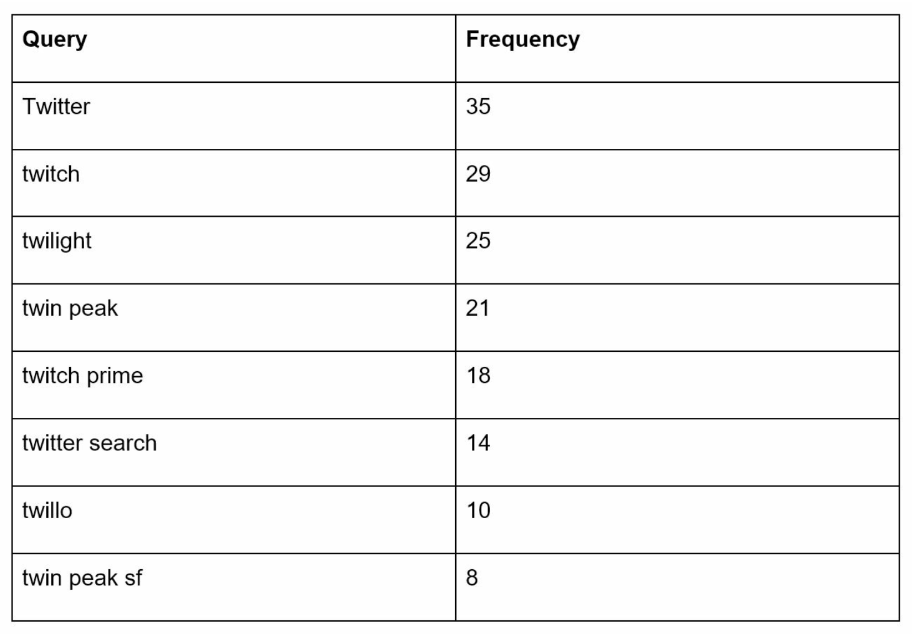
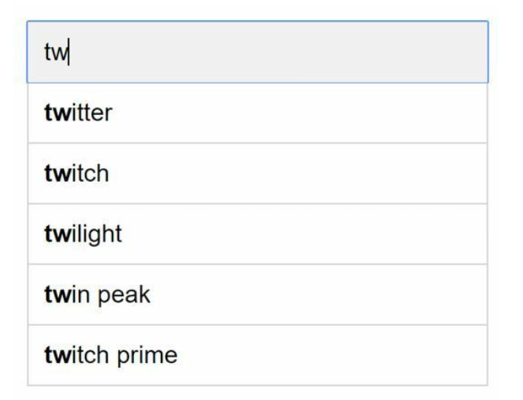
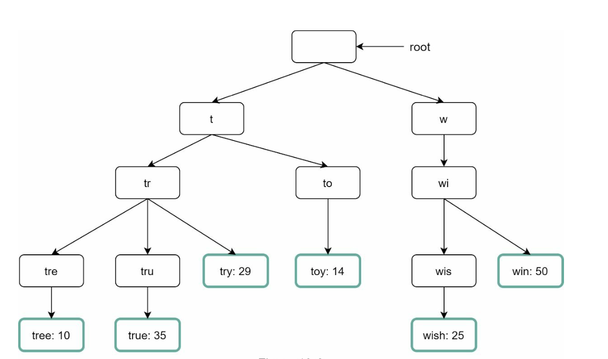
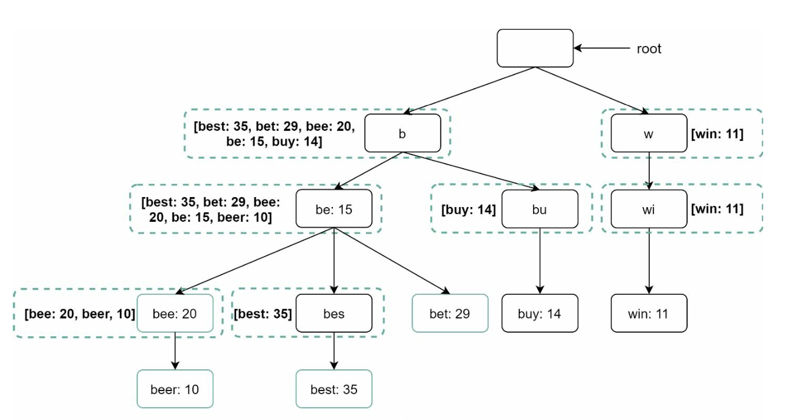
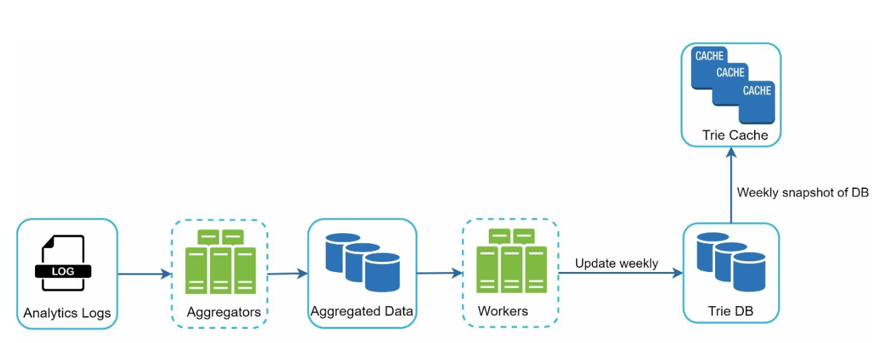

第 13 章：设计搜索自动补全系统
原章节：Design a Search Autocomplete System · 原项目路径
13. Search Autocomplete/
本章导读
你在搜索框里敲下 "t"，还没敲第二个字母，下拉框里就已经列出了 "taobao"、"twitter"、"天气"。这个功能叫自动补全（Autocomplete），也叫即时搜索（Typeahead）或增量搜索（Incremental Search）。
它看起来是个"小功能"，但它有一个非常苛刻的约束：每一次按键都要触发一次查询，而且必须在 100 毫秒内返回结果。 当你每天有 1000 万用户在搜索框里敲字时，这意味着每秒几万次的请求，全部要打在一个能在毫秒级返回"最热门的 5 条建议"的系统上。
这一章要解决的核心问题是：如何用前缀树（Trie）在内存里存下上亿条查询，并让每一次按键都能在 100 毫秒内拿到 Top-K 结果？
学完这一章，你应该能回答：为什么必须在 Trie 的每个节点上缓存 Top-K？一个 Trie 怎么塞进内存？"刚刚火起来的搜索词"怎么能几分钟内出现在补全里，而不是等一天？个性化推荐和用户隐私为什么天然冲突？
你将学到
- 自动补全系统的两个核心服务：数据采集（Data Gathering）与查询（Query）
- Trie（前缀树）的原理，以及在每个节点缓存 Top-K 结果这一关键优化
- 存储优化：双数组 Trie、前缀压缩、序列化 + 内存映射（mmap）
- 从批处理到流式：如何让热搜词在几分钟内出现（双层 Trie / Lambda 架构）
- 分片策略与负载均衡
- 个性化与隐私的冲突及其设计原则
1. 需求与规模
功能需求
原笔记给出的约束：
- 最多返回 5 条自动补全结果；
- 按**查询热度（频率）**排序；
- 只支持小写英文字母；
- 响应时间 < 100 毫秒，且系统可扩展。
规模估算
原笔记给出了三个数字，但没有给出推导过程。我们把它算一遍——因为这三个数字决定了整个架构。
① QPS 是怎么来的？
假设：
日活用户（DAU）= 10,000,000
每人每天搜索次数 ≈ 10 次
每次搜索平均敲 ≈ 20 个字符
→ 每一次按键都触发一次补全请求
日请求量 = 10,000,000 × 10 × 20 = 2,000,000,000（20 亿次）
平均 QPS = 2,000,000,000 / 86,400 ≈ 23,148
峰值 QPS = 23,148 × 2 ≈ 46,296 ≈ 48,000
为什么"每次按键都请求一次"是合理的假设？ 因为这是自动补全的用户体验要求。如果只在用户停下打字 300 毫秒后才请求（这叫防抖 / Debounce），那响应会显得迟钝。真实系统通常是"防抖 + 立即请求"的混合策略：用户快速连续输入时防抖，停顿后立即发请求。所以量级估算按"每次按键一次请求"是合理的上界。
注意峰值倍数只有 2 倍——这和其他系统（常用 3 倍）不同。原因是搜索行为本身就分散在全天，不像电商下单那样集中在几个时间点。
② 存储增长
原笔记说每天新增 0.4 GB 查询数据。我们来算一下长期累积：
一年 = 0.4 GB × 365 = 146 GB
十年 = 0.4 GB × 365 × 10 = 1,460 GB ≈ 1.46 TB
1.46 TB 的原始查询日志——如果全量塞进内存，成本无法接受。所以必须裁剪（Pruning）：
关键洞察：只有热门的查询才值得出现在补全建议里。 一个只被搜过一次的冷门查询，永远不会有人看到它的建议。
所以：只保留 Top 1 亿条热门查询。假设每条查询平均 50 字节：
100,000,000 × 50 字节 = 5,000,000,000 字节 ≈ 5 GB5 GB——这就完全可以放进几台机器的内存里了。从 1.46 TB 压到 5 GB，靠的就是"只留 Top-K"这一条裁剪规则。 这是本章最重要的设计思想之一，后面 Trie 的节点 Top-K 缓存也是同一个思路的延伸。
③ 高可用
系统不能因为故障而停机（原笔记的 "High Availability" 要求）。这意味着 Trie 要有副本，查询服务要能容灾。
2. 高层设计：两个服务
系统可以拆成两个相对独立的服务：
① 数据采集服务（Data Gathering Service）
- 收集用户查询，聚合成频率数据；
- 负责构建 Trie。
② 查询服务（Query Service）
- 根据用户输入的前缀，返回 Top-K 建议。
原笔记有一句很诚实的说明：
Real-time processing is not practical for large data sets; however, it is a good starting point.
意思是"大数据集下实时处理不现实，但作为起点是可以的"。这句话的结论是对的（实时全量重建 Trie 不可行），但表述有点绝对——现代系统通过"双层 Trie"做到了准实时。这个我们放到第 8 节详细讲。
2.1 数据采集服务

- 从分析日志（Analytics Logs）里聚合查询数据，更新频率表（Frequency Table）；
- 定期（原笔记说每周）处理历史数据，构建 Trie。
2.2 查询服务


- 使用数据采集服务产出的频率表；
- 根据用户输入，从 Trie 里取出 Top-K 建议；
- 用缓存和高效数据结构优化查询速度。
比如用户输入 tw，系统返回：
| 排名 | 查询 | 频率 |
|---|---|---|
| 1 | 1,000,000 | |
| 2 | twitch | 800,000 |
| 3 | twilio | 500,000 |
| 4 | twitch tv | 300,000 |
| 5 | twenty one pilots | 200,000 |
这里有一个隐含的要求：返回的必须是按频率降序排列的前 5 名，而不是"前 5 个匹配的"。这意味着系统不能只是"找到所有以
tw开头的查询"，还必须排序。如果每次查询都要遍历整个子树再排序，性能会很差——这正是"节点缓存 Top-K"要解决的问题（见第 4.2 节）。
3. 深入设计：Trie（前缀树）
3.1 Trie 是什么
Trie（前缀树 / 字典树）是一棵树形数据结构，用来高效地存储和检索字符串。
它的核心思想是：把字符串的公共前缀合并到同一条路径上。
假设要存 tree、try、true 三个词：
(root)
|
t
|
r
/ \
e y ← "try" 结束
|
e
|
e ← "tree" 结束
|
u
|
e ← "true" 结束
可以看到：tr 这个前缀只存了一次，三个词共享它。
Trie 的两个关键特性（原笔记提到的）：
- 紧凑存储（Compact Storage）：分层表示前缀，最大程度减少冗余。存 N 个词的总节点数，远小于所有词的字符数之和。
- 频率信息（Frequency Information）：可以在节点上存储查询的热度。

3.2 关键优化：在每个节点缓存 Top-K
原笔记提到了这一点，但只有一句话：
Cache top-k queries at each node to speed up retrieval and avoid traversing the whole trie.
这一句话是整个系统的性能关键，必须展开讲透。
先看"不缓存"会怎样。
用户输入 t，你要返回以 t 开头的 Top 5 查询。朴素做法是：
- 走到
t节点； - 遍历
t的整个子树，收集所有以t开头的查询； - 按频率排序，取前 5 个。
问题在于：以 t 开头的查询可能有上千万条。 遍历这个子树要访问上千万个节点，耗时可能是几百毫秒甚至几秒——远超 100 毫秒的预算。
而且更糟的是：这个成本是"每敲一个字母就要付一次"。用户输入 twitter 的 7 个字母，就要做 7 次这样的遍历。
缓存 Top-K 的做法。
在每个节点上预先存好"以该节点为前缀的 Top-K 查询"：
节点 't' → [twitter, twitch, twilio, taobao, tumblr]
节点 'tw' → [twitter, twitch, twilio, twitch tv, twenty one pilots]
节点 'twi'→ [twitter, twitch, twilio, twitch tv, twitch prime]
于是查询变成了：
- 沿着前缀走到目标节点（
t→w，共 2 步）； - 直接读出该节点缓存的 Top-5 列表，返回。
复杂度从"遍历子树 + 排序"（O(子树大小)）降到"走前缀长度 + 读 K 条"（O(前缀长度 + K)）。 对于 tw 这个前缀，就是 2 步 + 读 5 条——微秒级。

代价是什么？内存。
Top-K 缓存内存 ≈ 节点数 × K × 每条记录的字节数
粗略估算：假设压缩后的 Trie 有约 1 亿个节点，K = 5，每条记录存一个 4 字节的查询 ID：
100,000,000 × 5 × 4 字节 = 2,000,000,000 字节 ≈ 2 GB
仅仅是 Top-K 缓存就要 2 GB，再加上树结构本身（每个节点要有子节点指针、字符等），总内存可能到 5–10 GB。
这就是为什么必须做存储优化（第 5 节）和分片（第 7 节）。
一个实用技巧：不是每个节点都值得缓存。
- 浅层节点（
a、b、t）被查询的频率极高，必须缓存；- 深层节点（比如
twitterscriptsyntax的第 15 层）可能一个月都没人查到，缓存它纯属浪费内存。- 优化做法：只给"访问频率超过阈值"或"深度小于某个值"的节点建缓存。也可以按访问频率动态决定（类似缓存的 LRU 思想）。
3.3 Trie 的三种操作
原笔记把 Trie 的操作分成创建、更新、删除：
① 创建（Create）
- 定期（原笔记说每周）用聚合后的查询数据构建；
- 数据来源是分析日志或数据库。
② 更新（Update）
- 原笔记说"很少实时更新，每周替换旧数据"。
这个说法在今天是过时的——现代系统通过流式管道 + 双层 Trie 做到了准实时更新。详见第 8 节。
③ 删除（Delete）

- 用**过滤层（Filter Layer）**移除不想要的或有害的建议（比如仇恨言论、色情内容、侵权内容）；
- 过滤层的价值在于灵活性：可以根据不同的规则动态调整，不需要重建整个 Trie；
- 不想要的建议会异步地从数据库中物理删除。
为什么要有"过滤层"而不是直接改 Trie？ 因为 Trie 是批量构建、只读的（每构建一次成本很高）。如果每次要删一个词就改 Trie，代价太大。所以做法是：
- Trie 保持不动；
- 维护一个黑名单（Blocklist），查询时过滤掉黑名单里的词；
- 定期重建 Trie 时，才把这些词物理移除。
但这里有一个坑：如果 Trie 节点上缓存的是 Top-5，而其中 2 个被黑名单过滤了，你只能返回 3 条——用户看到的建议数量不足。
解法是"超额取（Over-fetch）"：节点上缓存 Top-(K + F)，其中 F 是预估的过滤比例。查询时取 K+F 条，过滤掉黑名单里的，再返回前 K 条。F 的大小要根据历史过滤率动态调整。
4. 查询处理流程
把前面的设计串起来，一次查询的完整流程是：
-
前缀查找（Prefix Search）
- 从 Trie 根节点开始，沿着用户输入的每个字符往下走，定位到前缀节点。
- 如果中途走不通（前缀不存在），直接返回空结果。
-
取 Top-K
- 如果节点有 Top-K 缓存：直接读取，O(1)。
- 如果没有缓存：遍历子树收集候选，排序后取前 K（这个路径很慢，所以要尽量避免）。
-
过滤与超额取
- 对候选应用过滤规则（黑名单、敏感词、合规要求）；
- 因为过滤会减少结果数，所以要超额取 K+F 条。
-
组装响应
- 返回结果，通常包含建议文本、以及可选的元数据（比如是否是个"实体"、跳转链接）。
原笔记在"查询处理流程"这一节写的是"遍历子树收集有效建议"，而在"优化"一节写的是"缓存 Top-K 避免遍历"——这两处是矛盾的。 正确流程是：优先走 Top-K 缓存，遍历子树只作为兜底。 详见文末勘误 1。
5. 存储优化：如何把 Trie 塞进内存
原笔记完全没有涉及这一块，但它是自动补全系统的工程核心——Trie 能不能放进内存，直接决定了系统的成本和延迟。
5.1 优化一：双数组 Trie（Double-Array Trie）
问题：朴素的 Trie 用指针连接节点。在 64 位系统上，一个指针就是 8 字节；一个节点如果有多个子节点，还要用数组或哈希表存子节点——指针的开销比数据本身还大，而且指针跳转对 CPU 缓存极不友好（每次跳转都可能是一次缓存未命中）。
双数组 Trie 的解法：用两个整数数组 base[] 和 check[] 表示整棵树，完全不用指针。
状态转移规则：
从状态 s 出发，读入字符 c，到达下一个状态 t：
t = base[s] + c
如果 check[t] == s，则 t 是合法状态；
否则说明这条转移不存在。
为什么这样设计？
- O(1) 转移：一次加法 + 一次数组访问，没有指针追踪。
- 内存紧凑：两个
int数组，每个节点只占 8 字节（相比指针 + 哈希表的几十字节，节省数倍）。 - 缓存友好：数组是连续内存，CPU 预取器能有效工作。
代价：
- 构建困难。要在两个数组里"塞"下所有节点，同时保证
base[s] + c不冲突，这是一个约束满足问题，构建算法相当复杂（经典算法是 Aho-Corasick 和 Darts 的实现）。 - 不适合频繁动态插入。构建是一次性的离线过程，正好符合"Trie 定期重建"的需求。
工业界的实际使用：双数组 Trie 被广泛用于中日文分词器（如 MeCab、HanLP）、输入法词库、以及一些搜索引擎的词表实现。它的前提是"词典相对静态、查询极频繁"——这正是自动补全的场景。
5.2 优化二：前缀压缩（Path Compression / Radix Tree）
问题：Trie 里有很多"独生子节点链"。比如 unbelievable 这个词，从 u 到结尾有 12 层，每层只有一个子节点——这些节点除了"往下走"没有任何信息量，白白占用 11 个节点的空间。
前缀压缩的解法：把只有一个子节点的连续链，合并成一条边，边上标注整段字符串。
压缩前： 压缩后：
u u
| |
n "nbelievable"
| ← 一条边，标签是整段字符串
b
|
e
...
效果：
- 节点数大幅减少。对于自然语言词表，通常能减少 50%–90% 的节点。
- 查询深度降低，但每次比较的是字符串而不是单个字符（需要字符串比较）。
代价：实现更复杂；插入和删除时要处理边的分裂（split）和合并。
这就是"压缩前缀树（Compressed Trie）"或"基数树（Radix Tree）"。Redis 的 Stream 内部就用基数树存消息 ID；Lucene 的 **FST（Finite State Transducer，有限状态转换器）**是它的进一步推广（不仅压缩前缀，还压缩后缀，能共享公共后缀）。
5.3 优化三：序列化 + 内存映射（mmap）
问题：Trie 可能有好几 GB。如果每个查询服务进程都在自己堆内存里重建一份，会：
- 启动慢：构建一次要几分钟到几十分钟；
- 内存浪费：10 个进程就占 10 份内存；
- GC 压力大：几 GB 的堆对象会让 GC 停顿变得不可接受。
解法：离线构建 → 序列化成扁平文件 → 查询服务用 mmap 映射进来。
流程：
批量任务构建 Trie
↓
序列化为无指针的扁平文件（用偏移量代替指针）
↓
存入对象存储 / 本地磁盘
↓
查询服务 mmap 映射（不拷贝，直接读）
为什么 mmap 这么好用？
| 好处 | 说明 |
|---|---|
| 进程间共享物理内存 | 10 个进程 mmap 同一个文件，操作系统只保留一份物理内存（页缓存），全部共享 |
| 按需加载 | 只有被访问到的页才会从磁盘读入内存。冷门的子树永远不占内存 |
| 启动瞬时 | 不需要解析和构建，映射即可用 |
| 无 GC 压力 | 数据在堆外，GC 完全不感知 |
一个必须满足的前提：序列化后的结构必须"无指针"。因为 mmap 的虚拟地址在不同进程、不同次启动时是不一样的，所以不能用绝对指针，只能用相对于文件起始位置的偏移量（offset）。
这不是什么冷门技巧——Lucene 的 FST 就是这么做的：把词表（term dictionary）构建成 FST，序列化到索引文件，查询时 mmap 进来。这是搜索引擎的标准做法。你的 Trie 完全可以照搬这个思路。
5.4 优化四：KV 存储方案（原笔记提到，但要说清代价）
原笔记提到另一种存储方案：
Key-Value Store: Maps prefixes to node data for fast access. Every prefix in the trie is mapped to a key in a hash table.
也就是：把所有前缀都作为 key 存进一个 KV 存储（比如 Redis），value 是节点数据。

优点：
- 实现简单：不用自己写数据结构，直接用现成的 KV 存储（Redis、RocksDB）；
- 天然可扩展：KV 存储自带分片能力。
代价（原笔记没说）：
| 代价 | 说明 |
|---|---|
| 失去前缀共享 | Trie 的核心优势是"tr 只存一次"。而 KV 方案里，t、tr、tre、tree 是四个独立的 key。存储量会膨胀到 Trie 的数倍 |
| 每次查询一次网络往返 | 走 Trie 是本地内存操作（微秒级）；查 KV 是网络调用（毫秒级）。用户敲 7 个字母就是 7 次网络往返，100 毫秒预算很紧张 |
| KV 存储本身也要分片 | 分片后，"前缀在哪一片"又成了新问题 |
所以正确的定位是：
- KV 方案适合"查询量不大、想快速上线"的场景（工程成本低）；
- 自建 Trie + mmap 适合"查询量极大、对延迟和成本敏感"的场景（工程成本高，但性能最优）。
这不是"哪个更好"的问题，而是"在什么规模下选哪个"的问题。
6. 数据采集管道
原笔记在高层设计里假设"用户每次搜索就实时更新数据"，然后指出这不实际：
Users may enter billions of queries per day. Updating the trie on every query is not feasible. Top suggestions may not change much once the trie is built.
这两条理由都成立。注意第二条：一旦 Trie 建好，Top 建议短期内不会有大的变化——今天的 "twitter" 和昨天的 "twitter" 都在第一名。所以不需要每次查询都更新。
6.1 更新后的设计（批处理管道）

原笔记的管道有四个环节：
① 分析日志（Analytics Logs）
- 存储原始查询数据，供后续聚合；
- 日志是追加写的（append-only）、不建索引——这是关键。因为日志只需要顺序写入和批量读取，不建索引能极大提升写入吞吐（呼应第 1 章讲的"顺序写比随机写快几个数量级"）。
② 聚合器（Aggregators）
- 把日志处理成频率表（Frequency Table），供构建 Trie 使用；
- 聚合频率取决于业务：Twitter 这种实时性要求高的场景，聚合间隔要短；普通场景每周一次就够。
③ Worker
- 异步服务，负责重建 Trie 并存入持久化存储。
④ 存储（Storage）
- Trie 缓存（Trie Cache）：分布式缓存，把 Trie 放在内存里供快速读取；
- Trie 数据库（Trie DB）：
- 文档存储（如 MongoDB）：因为 Trie 每周重建一次，可以定期对它做快照（snapshot），序列化后存进数据库；
- KV 存储：前缀 → 节点数据的映射（见第 5.4 节）。
这套管道的延迟是"小时级到天级"的：日志写入 → 定期聚合 → 重建 Trie → 发布。如果每周重建一次，一个新出现的热搜词可能要等上一周才能出现在补全里。这在今天的产品标准下是不可接受的（想象一下"某地突发地震"这种词要等一周才出现）。 第 8 节会讲怎么把它压缩到分钟级。
7. 扩展性：分片与负载均衡

一个 Trie 可能有几 GB 到几十 GB，单机放不下、也扛不住 48,000 QPS。所以要分片（Sharding）。
7.1 按前缀范围分片
原笔记的方案是：按前缀的首字母范围分片：
分片 1：a – m
分片 2：n – z
为什么这样分？ 因为一次前缀查询只会命中一个分片——查 tw 只需要去 n-z 那片，不需要跨分片查询。这是前缀分片最大的优势：查询不需要广播。
7.2 但首字母分布极不均匀
英文单词的首字母分布严重倾斜：s、c、p、a 开头的词远多于 x、z、q。如果把 26 个字母平均分成两片，两片的负载可能相差好几倍。
所以原笔记提出了二级分片：
第一级：a-m / n-z
第二级（在负载高的前缀内再分）：
aa-ag / ah-an / ...
核心思想：分片粒度要能自适应数据分布，而不是简单地按字母表切。
分片键怎么选，是分片方案成败的关键（第 1 章讲过）。这里的分片键是"前缀字符串"，它天然满足两个要求：
- 查询局部性：同一个前缀只在一片上；
- 可再细分：一个前缀太热，可以继续往下切。
但要注意：前缀分片也意味着"负载会随时间漂移"——今天
s开头的查询多，明天可能c开头多。所以分片边界需要定期重新评估。
7.3 分片映射管理器（Shard Map Manager）
请求要路由到正确的分片，需要一个分片映射管理器：
客户端请求 "tw" → 分片映射管理器 → "tw 在分片 2" → 转发到分片 2
这里有两个工程细节（原笔记没说）：
- 分片映射管理器不能是单点，也不能是每次请求都调用。 如果每次查询都问一次映射管理器，那它就成了瓶颈（48,000 QPS 全打到它身上）。做法是客户端缓存分片映射表，只在分片拓扑变化时才刷新。
- 映射表本身就是一份配置，可以用 ZooKeeper / etcd 这类协调服务来维护和推送（呼应第 12 章的服务发现）。
8. 实时性：让热搜词几分钟内出现
这是原笔记最大的缺口。它的批处理管道是小时级到天级的延迟，而现实要求是分钟级。
8.1 为什么需要实时
考虑这几个场景：
- 突发事件："某地地震"、"某航班失联"——这类查询会在几分钟内爆发，如果补全系统一周后才收录，用户体验就很差。
- 实时热点：一场球赛、一个综艺节目、一次发布会，热度可能在几小时内冲上顶峰然后消退。
- 电商大促："双十一红包"这种词，只在特定时间点有热度。
补全系统如果不能反映实时热点，它的价值就大打折扣。
8.2 双层 Trie（Lambda 架构）
核心思路：不要试图实时重建整个 Trie，而是维护一个"基础层 + 热点层"。
┌─────────────────────────────────────────┐
│ 基础层（Base Trie） │
│ · 全量 Top 1 亿查询 │
│ · 天级 / 周级批量重建 │
│ · 稳定、覆盖全面、体积大 │
└─────────────────────────────────────────┘
+
┌─────────────────────────────────────────┐
│ 热点层（Hot Layer） │
│ · 只含最近几分钟 / 几小时突增的查询 │
│ · 秒级 / 分钟级流式更新 │
│ · 体积小（几千到几万条）、放在内存 / Redis │
└─────────────────────────────────────────┘
↓
查询时合并两层的结果
查询时的合并逻辑：
- 先去热点层查这个前缀（数据量小，极快）；
- 再去基础层查（走 Top-K 缓存）；
- 合并两个列表，去重，按分数排序，取 Top-K。
为什么这个设计成立？ 因为它把"全量重建"这个昂贵操作，替换成了"小规模增量更新"——热点层只有几千到几万条，更新它只需要毫秒级，可以做到秒级刷新。而基础层保持天级重建，成本可控。
这正是**Lambda 架构（批处理层 + 速度层）**的思想：用批处理层保证"全和准"，用速度层保证"快"，查询时合并两者。
8.3 流式管道怎么搭
用户查询 → Kafka（消息队列）
↓
流处理（Flink / Spark Streaming / Kafka Streams）
↓
滑动窗口计数（最近 5 分钟 / 1 小时）
↓
热度超过阈值？
↓ 是
写入热点层（Redis）
几个关键设计点：
| 设计点 | 说明 |
|---|---|
| 滑动窗口（Sliding Window） | 统计"最近 5 分钟"和"最近 1 小时"的频率。用多个窗口能同时捕捉"瞬时爆发"和"持续热门" |
| 近似计数（Count-Min Sketch） | 精确统计几亿个查询的频率需要巨大内存。Count-Min Sketch 是一个概率数据结构，用固定的小内存就能估算频率（可能有轻微高估，但不会漏掉高频项）。这是流式频率统计的标准工具 |
| 阈值 + 防抖 | 只有"热度超过阈值"的查询才进热点层，避免噪声（比如某个爬虫刷了几百次同一个词）污染建议 |
| 时间衰减（Decay） | 热点会过期。分数要按时间指数衰减，否则一个月前的热点还会挂在补全里。过期后自动从热点层移除 |
| 幂等写入 | 流处理可能重放（至少一次语义），写入热点层要幂等（直接覆盖分数，而不是累加） |
一个必须注意的边界：热点层的内容仍然要过过滤层（黑名单）。突发事件往往会伴随大量恶意查询（比如针对某个人的人身攻击），如果不加过滤，这些内容会立刻出现在所有人的补全建议里。实时性和合规必须同时满足。
8.4 批处理 vs 流式：怎么选
| 维度 | 纯批处理 | 双层（批 + 流） |
|---|---|---|
| 新词出现延迟 | 小时～天级 | 秒～分钟级 |
| 实现复杂度 | 低 | 高（需要 Kafka + 流处理 + 热点层） |
| 成本 | 低 | 高（多一套实时链路） |
| 适合场景 | 查询分布稳定的产品 | 有实时热点的产品（搜索、社交、新闻） |
建议：先做批处理，把基础层做稳；当业务确实需要实时热点时，再加热点层。 不要一上来就上流式——那会显著增加复杂度和运维成本。
9. 个性化与隐私
原笔记完全没有涉及这个话题，但现代搜索的补全几乎都是个性化的，而个性化和隐私之间存在天然冲突。
9.1 个性化的层次
| 层次 | 依据 | 例子 |
|---|---|---|
| 全局 | 全站热度 | 输入 tw → twitter |
| 群体（Cohort） | 地域、语言、设备 | 中文用户输入 tw → 可能优先给 推特；日本用户 → twitter 仍是第一 |
| 个人 | 用户自己的搜索历史 | 你经常搜"Python 教程"，输入 py → 优先给 python tutorial 而不是 pytorch |
架构上怎么支持？
- 全局层：就是第 3 节的 Trie，所有用户共享；
- 群体层：按地域 / 语言建多棵 Trie（原笔记在"多语言支持"里提到了"为不同国家构建独立的 Trie"）；
- 个人层：不放进 Trie，而是单独存（比如 Redis 里
user_id → 最近 N 条查询，带 TTL），查询时和全局结果合并。
为什么个人层不能进 Trie？ 因为 Trie 是所有用户共享的。如果把某个用户的私人查询写进全局 Trie，它就会变成所有人的补全建议——这是严重的隐私泄露。
这是一条铁律：个性化数据必须与全局频率数据物理隔离。 个性化数据只能存在"用户自己的读路径"上，绝不能回流到全局统计里。
9.2 隐私风险
自动补全的隐私风险比想象中严重：
| 风险 | 说明 |
|---|---|
| 共享设备泄露 | 家里的共用电脑，你搜过"离婚律师"，下一个人输入 离 就看到这个建议。这是真实的隐私泄露 |
| 敏感查询污染全局 | 如果敏感查询（医疗、财务、性相关）进入了全局频率表，它们会变成所有人的建议。必须有过敏感词过滤 |
| 个性化即追踪 | 要个性化就必须记录用户历史。这些历史本身就是敏感的画像数据，受 GDPR 等法规约束 |
| 名誉侵权（Defamation） | 这是真实发生过的法律问题：多国法院（德国、法国、日本等）曾判决要求 Google 移除某些自动补全建议，因为输入某人姓名时会出现"骗子""罪犯"等诽谤性联想。Google 为此建立了人工审核和移除流程 |
| 搜索引擎投毒 | 攻击者可以通过大量刷同一个查询（比如"某品牌 骗局"），把它刷进补全建议里，达到抹黑目的。这就是为什么热点层要有阈值和反刷机制 |
9.3 设计原则
| 原则 | 做法 |
|---|---|
| 默认不用个人历史做补全 | 或至少需要用户明确同意（opt-in） |
| 敏感类别永久排除 | 医疗、财务、性相关、自伤等类别，无论多热都不进全局建议 |
| 提供"清除历史"入口 | GDPR 的"被遗忘权"要求；清除后个性化建议立即失效 |
| 群体优先于个人 | 能用"同地区同语言用户的热搜"解决，就不要用"这个用户的历史"——前者隐私风险低得多 |
| 实时热点也要过滤 | 热点层同样要过黑名单（第 8.3 节） |
| 可申诉的移除流程 | 对名誉侵权类投诉，要有明确的人工审核和移除机制 |
一句话总结：自动补全的每一个建议，都是"用户想搜什么"的一次公开投票。 把私人投票变成公开结果，就必须极其谨慎。技术上的最优（个性化）未必是产品上的最优（隐私）。
10. 高级特性
10.1 多语言支持
原笔记的两点：
- 用 Unicode 支持非英文语言：Unicode 能覆盖全球几乎所有书写系统；
- 按国家 / 地区构建独立的 Trie：不同语言、不同地区的热词完全不同，分开建 Trie 既能提升相关性，也能减小单棵树的规模。
补充：非拉丁语系（中文、日文、韩文）的额外挑战。
- 分词问题：英文天然按空格分词，而中文"北京大学"是一个词还是"北京"+"大学"？需要分词器。这会影响"前缀"的切分方式。
- 前缀的粒度：中文的"前缀"可以是字符级，也可以是拼音级。很多中文输入法同时支持"拼音前缀"（输入
bjdx→ "北京大学"），这相当于在 Trie 上挂了一棵拼音映射树。- Unicode 的存储开销：一个中文字符在 UTF-8 里占 3 字节，而英文字母只占 1 字节。所以中文 Trie 的内存开销明显更高，存储优化（第 5 节）更关键。
10.2 热门查询（Trending Queries）
原笔记的处理方式是：动态更新 Trie 节点，或者给最近的查询更高的权重。
这本质上就是第 8 节讲的"双层 Trie + 时间衰减"。 一个具体的权重设计：
score(query) = Σ (每次搜索的权重 × 时间衰减因子)
时间衰减因子 = exp(-λ × (now - search_time))
λ越大，衰减越快，热搜更新越灵敏；λ越小，越平滑，热搜更稳定。
这个公式的好处：不需要"定期清零"，老查询的分数会自然衰减到可忽略。这和 Redis 的 LFU 淘汰、以及各种热度排行榜的实现是同一个思路。
11. 其他优化（原笔记列出）
- 节点缓存 Top-K：避免冗余遍历（第 3.2 节已详述）。
- 限制前缀长度：原笔记说"限制到 50 个字符"。见文末勘误 3。
- AJAX 请求：用轻量的异步请求实现实时响应。这是最基础的一环——如果用同步请求，每次按键都要刷新页面，体验灾难。
- 浏览器缓存：把常搜词的补全结果缓存在浏览器里。
补充：浏览器缓存的正确做法 原笔记说"把补全结果存进浏览器缓存"，但没说怎么存。正确做法是在响应上设置 HTTP 缓存头：
Cache-Control: public, max-age=60这样同一个前缀（比如
tw）在 60 秒内重复请求会直接命中浏览器缓存，不打到服务端。两个注意点：
- 前缀不同，缓存不能混用。
tw和twi是两份缓存，所以 key 必须包含完整前缀。- 个性化结果不能设公开缓存。如果建议里混了用户私人的搜索历史，
Cache-Control: public会导致代理服务器把 A 的个性化结果返回给 B——这是严重的安全漏洞。个性化结果必须用Cache-Control: private，或者干脆不缓存。- 缓存时间不能太长。热点词要实时反映，
max-age设太长会让用户看到过期的建议。60 秒是一个常见的折中。
勘误与补充
勘误 1：查询流程自相矛盾（遍历子树 vs 不遍历）
- 原文说法：Query Processing Flow 一节写
Prefix Search: Traverse the subtree to collect valid suggestions；而 Optimizations 一节写Cache at Each Node: Store the top-k queries to avoid redundant traversals。 - 问题：这两处互相矛盾。如果已经缓存了 Top-K，就不需要遍历子树；如果要遍历子树，缓存就没意义了。原笔记把"朴素做法"和"优化做法"并列在流程里，会让初学者搞不清到底该怎么做。
- 正确说法：主路径是"走前缀 → 直接读节点缓存的 Top-K"（O(前缀长度 + K)）；遍历子树只作为兜底（节点没有缓存时），而且要尽量避免走到这条路径。
- 延伸：这提醒我们，原笔记里的"流程"和"优化"两节是分开写的，可能存在内部不一致。读的时候要把它们对齐。
勘误 2："实时处理不现实"是过时的表述
- 原文说法：
Real-time processing is not practical for large data sets; however, it is a good starting point.；Trie 的 Update 操作写Rarely updated in real-time; weekly updates replace old data. - 问题："实时全量重建 Trie"确实不现实，但"实时更新建议"完全可行。 现代系统用"基础层 + 热点层"的双层结构，让热点词在秒到分钟级就能出现在补全里。原笔记的表述容易让初学者以为"补全系统只能是小时/天级延迟"，这是不对的。
- 正确说法：用 Lambda 架构——基础层天级/周级批量重建（保证全和准），热点层秒级/分钟级流式更新（保证快），查询时合并两层。详见第 8 节。
- 延伸：这也是一个"原笔记反映的是它写作年代实践"的例子。技术在演进，读书笔记的结论也要跟着更新。
勘误 3："限制前缀长度到 50" 的数字和理由都不严谨
- 原文说法：
Limit prefix length to reduce search space as users rarely type a loong search query (say 50). - 问题：① 数字 50 非常随意。用户在搜索框里敲 50 个字符的情况几乎不存在，真实的分界点在 20–30 个字符左右；② 理由不完整。"用户很少打长查询"只是表象，真正的原因是：超过一定长度后，补全建议基本收敛（只剩 1–2 个候选），继续建深层节点是纯浪费。而且限制深度能直接给 Trie 的大小设一个上界，这对内存规划很重要。
- 正确说法：限制前缀长度的目的是给 Trie 深度设上界、控制内存，而不只是"用户不打长词"。实践中的阈值通常在 20–30 字符之间，具体取决于语言（中文按字符计，阈值更低）。
- 延伸：任何"经验数字"都要问清楚"为什么是这个数"。面试时说"限制前缀长度"是加分项，但如果说不出理由，反而会被追问。
勘误 4：KV 存储方案被当成了等价选项，其实代价很大
- 原文说法：
Storage Options: Trie DB — Document Store (e.g., MongoDB) / Key-Value Store: Maps prefixes to node data for fast access. - 问题：把 KV 存储和 Trie 并列成"两种存储选项"，没有说明它们性能特征完全不同。KV 方案会失去前缀共享（
t、tr、tre是三个独立 key，存储量膨胀数倍），而且每次查询是一次网络往返（用户敲 7 个字母就是 7 次），在 100 毫秒的预算下很紧张。 - 正确说法：KV 方案适合查询量不大、想快速上线的场景（工程成本低）；自建 Trie + mmap 适合查询量极大、对延迟和成本敏感的场景。两者是"规模不同阶段的取舍"，不是等价的。
- 延伸：这一点和第 1 章"选 SQL 还是 NoSQL"的思路一致——没有绝对更优的方案，只有更适合当前约束的方案。
补充 1：节点缓存 Top-K 的细节与内存代价
原笔记只有一句话。详见第 3.2 节。核心要点：把"遍历子树 + 排序"（O(子树大小)）降为"走前缀 + 读 K 条"（O(前缀长度 + K)）；代价是内存（约 1 亿节点 × 5 × 4 字节 ≈ 2 GB）；浅层热节点必须缓存，深层冷节点可以按访问频率选择性缓存。
补充 2：Trie 的内存优化四招
原笔记完全没讲。详见第 5 节。核心要点：
- 双数组 Trie：用
base[]+check[]两个整数数组代替指针，O(1) 转移、内存紧凑、缓存友好（代价是构建复杂）。 - 前缀压缩（Radix Tree）：把独生子节点链合并成一条带字符串标签的边，节点数可减少 50%–90%。
- 序列化 + mmap：离线构建、序列化成无指针的扁平文件（用偏移量代替指针），查询时 mmap 映射，实现进程间共享物理内存 + 按需加载 + 零 GC 压力。Lucene 的 FST 就是这么做的。
- KV 存储方案：实现简单但失去前缀共享、每次查询一次网络往返（见勘误 4）。
补充 3：流式实时性（双层 Trie / Lambda 架构）
原笔记的管道是小时/天级延迟。详见第 8 节。核心要点：基础层（天级批量重建，保证全和准）+ 热点层（秒/分钟级流式更新，保证快），查询时合并；流处理用 Kafka + Flink/Spark Streaming，频率统计用 Count-Min Sketch 省内存，热度用时间衰减自动过期，写入要幂等，热点层同样要过黑名单过滤。
补充 4：个性化与隐私
原笔记完全没提。详见第 9 节。核心要点：个性化分全局/群体/个人三层；个人层绝不能写进全局 Trie（否则私人查询变成所有人的建议）；共享设备、敏感查询、名誉侵权（多国法院曾判 Google 移除诽谤性补全建议）、搜索引擎投毒都是真实风险；设计上要"默认不个性化 + 敏感类别永久排除 + 提供清除历史 + 群体优先于个人"。
补充 5：过滤层与 Top-K 缓存的交互（超额取）
原笔记的过滤层和 Top-K 缓存是分开讲的，没说它们会互相影响。问题：如果节点缓存 Top-5，其中 2 条被黑名单过滤掉，用户只能看到 3 条建议。解法：节点缓存 Top-(K+F)，查询时取 K+F 条、过滤后返回前 K 条；F 根据历史过滤率动态调整。详见第 3.3 节。
补充 6：QPS 48,000 的推导
原笔记直接给出了 48,000 的峰值 QPS，没有推导。详见第 1 节。推导：1000 万 DAU × 每人 10 次搜索 × 每次 20 次按键 = 20 亿请求/天 → 平均 23,148 QPS → 峰值（2 倍）≈ 46,296 ≈ 48,000。注意峰值倍数只有 2 倍，因为搜索行为分散在全天。
常见误区
| 误区 | 为什么错 | 正确理解 |
|---|---|---|
| 每次查询都遍历 Trie 子树找 Top-K | 以 t 开头的查询可能上千万条，遍历一次几百毫秒，而且每敲一个字母都要付一次 |
在每个节点缓存 Top-K，查询降为 O(前缀长度 + K) |
| 每个节点都缓存 Top-K 就行 | 深层冷节点可能一个月没人查，缓存它是纯浪费内存 | 浅层热节点必须缓存；深层按访问频率选择性缓存 |
| Trie 的 Top-K 缓存不需要考虑过滤层 | 缓存 Top-5 里若有 2 条被黑名单过滤，用户只看到 3 条 | 超额取（Over-fetch）Top-(K+F)，过滤后再截取 K 条 |
| 补全系统只能做到小时/天级延迟 | 双层 Trie 可以做到秒/分钟级 | 基础层批量重建 + 热点层流式更新，查询时合并（Lambda 架构） |
| 用 KV 存储存所有前缀和自建 Trie 等价 | KV 方案失去前缀共享（存储膨胀数倍），且每次查询一次网络往返 | 小规模用 KV 快速上线，大规模用 Trie + mmap |
| Trie 直接放进每个进程的堆内存就行 | 几 GB × 10 个进程 = 几十 GB 内存，启动慢、GC 停顿严重 | 序列化 + mmap：进程间共享物理内存、按需加载、零 GC 压力（前提是结构无指针） |
| 限制前缀长度只是为了"用户不打长词" | 真正原因是"超过一定长度建议会收敛"以及"给 Trie 深度设上界" | 阈值取 20–30 字符（按语言调整），目的是控制内存 |
| 个性化建议就是把用户历史加进去 | 如果把用户私人查询写进全局 Trie，它会变成所有人的建议 | 个性化数据必须与全局数据物理隔离，只走用户自己的读路径 |
| 敏感查询只要不热门就不会有问题 | 敏感查询一旦进入全局频率表，就会出现在所有人的补全里 | 敏感类别（医疗/财务/性相关）要永久排除，与热度无关 |
个性化补全结果可以设 Cache-Control: public |
代理服务器会把 A 的个性化结果返回给 B，是严重的安全漏洞 | 个性化结果必须 private 或不缓存 |
| 热点层可以不过滤，先快速上线 | 突发事件常伴随大量恶意查询，不滤就会把攻击内容推给所有人 | 热点层必须同样过黑名单过滤 |
| 用精确计数统计实时频率就行 | 几亿个查询的精确频率需要巨大内存 | 用 Count-Min Sketch 近似计数，固定小内存即可 |
| 热搜词进了 Trie 就一直在 | 一个月前的热点还挂在补全里，体验很差 | 分数要按时间指数衰减，过期自动移除 |
面试速记
-
一句话概括：自动补全系统是一个用 Trie 把"前缀 → Top-K"预计算好、靠内存 + 分片扛住高 QPS 的读密集型系统，核心矛盾是"低延迟"与"海量数据"。
-
必答要点：
- 两个服务：数据采集服务（聚合查询、构建 Trie）+ 查询服务（按前缀返回 Top-K）。
- Trie + 节点 Top-K 缓存：把查询从"遍历子树 + 排序"降到"走前缀 + 读 K 条"，这是 100 毫秒预算能达标的关键。
- 数据裁剪：只保留 Top 1 亿热门查询（约 5 GB），而不是全量日志（十年约 1.46 TB）。
- 分片：按前缀范围分片（
a-m/n-z），因为一次前缀查询只命中一个分片，不需要跨分片；首字母分布不均，所以要二级分片。 - 存储选型：小规模用 KV 存储快速上线；大规模用自建 Trie + 序列化 + mmap。
-
加分项：
- 主动给出 QPS 48,000 的推导（1000 万 × 10 次 × 20 键 = 20 亿/天 → 峰值 48k）。
- 主动讲 Trie 的内存优化：双数组 Trie、前缀压缩、序列化 + mmap（无指针结构、进程间共享、零 GC）。
- 主动提出**双层 Trie（Lambda 架构）**解决实时性：基础层批量重建 + 热点层流式更新。
- 主动指出个性化数据绝不能进全局 Trie，并讨论隐私风险（共享设备、名誉侵权、投毒）。
- 主动提到过滤层与 Top-K 缓存的交互（超额取 K+F）。
- 主动提到时间衰减让热搜自动过期。
-
高频追问：
- "Trie 怎么保证 100 毫秒内返回？" → 每个节点缓存 Top-K，查询是"走前缀长度 + 读 K 条"，微秒级；再用分片把单机数据量和 QPS 压下来；再加浏览器 / CDN 缓存层。
- "一个 Trie 有几十 GB，怎么放进内存？" → 四招：前缀压缩减少节点数；双数组 Trie 去掉指针开销；只保留 Top-K 热门查询（5 GB 而不是 1.46 TB）；序列化 + mmap（多进程共享物理内存 + 按需加载 + 零 GC）。放不下的部分再分片。
- "怎么让刚火起来的词马上出现在补全里？" → 双层 Trie：基础层天级重建保证全量覆盖，热点层用 Kafka + Flink 做滑动窗口计数（Count-Min Sketch 省内存），秒级写入 Redis；查询时合并两层结果。热点层同样要过黑名单，并用时间衰减自动过期。
- "个性化补全会泄露隐私吗？" → 会。三个真实风险：共享设备上你的私人搜索会被下一个人看到；个性化数据若流入全局 Trie 会变成所有人的建议；补全建议本身可能构成名誉侵权（多国法院有判例）。原则是"默认不个性化 + 敏感类别永久排除 + 数据物理隔离 + 提供清除历史"。
- "为什么要用双数组 Trie？"
→ 朴素 Trie 的指针开销比数据本身还大，且指针跳转对 CPU 缓存不友好。双数组用
base[]+check[]两个整数数组实现 O(1) 状态转移，内存紧凑、缓存友好。代价是构建复杂、不适合频繁动态插入——但 Trie 本来就是定期批量重建的，正好契合。
延伸阅读
- ByteByteGo 系统设计面试课程 — 原笔记的来源
- Lucene FST（Finite State Transducer） — 序列化 + mmap 压缩 Trie 的工业级实现
- Darts: Double-ARray Trie System — 双数组 Trie 的经典实现（MeCab 词库）
- Count-Min Sketch 原理 — 流式频率统计的概率数据结构
- Google：Autocomplete 政策与移除请求 — 补全建议的合规与申诉流程
- Apache Flink 官方文档 — 滑动窗口与流式聚合
- GDPR 官方全文 — 个性化数据的同意与删除要求